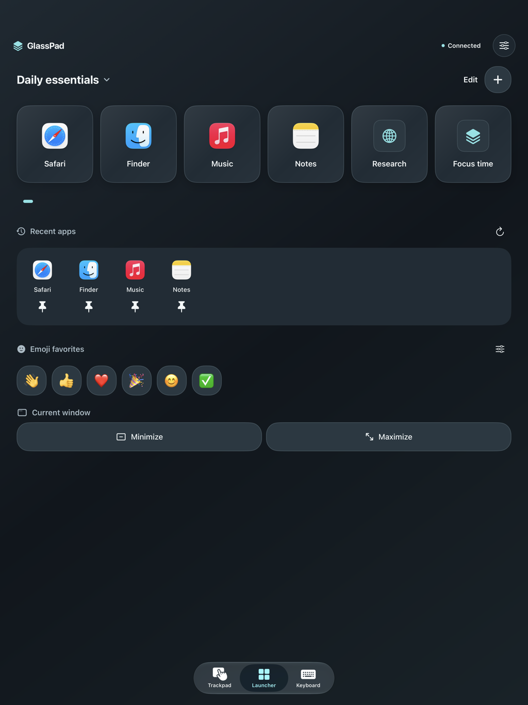

Less reaching. More doing.
Give your Mac
a personal touch.
Keep the things you reach for right beside you. Launch an app, run a Shortcut, move the pointer, or send a thought from the device already in your hand.
GlassPad app preview
Your own launch pad
Goodbye,
app hunting.
Give your favorite Mac apps, websites, and Apple Shortcuts a place of their own. Pin your recent apps and get back to what you were doing with a tap.
Modern. A little glass, a lot of clarity.
Find your flowA natural extension of your Mac
Move. Type.
Make things happen.
Trackpad
A little room
to move.
Move the pointer, scroll with two fingers, and drag with a tap. Your iPhone or iPad becomes a comfortable place to control your Mac.
Keyboard
Big ideas.
Small keyboard.
Write on your device and tap Send. Keep copy, paste, navigation keys, and Mac modifiers close at hand.
At home on iPad, too
More space.
Same flow.
Put a bigger launch pad beside your Mac. Apps, recent favorites, emojis, and window controls have room to breathe.
One Mac, one connected device at a time.

Two devices. One connection.
From here
to hands-on.
Get the pair.
Install GlassPad on your iPhone or iPad and the free companion on your Mac.
Make the connection.
Join the same Wi-Fi, open both apps, and scan the Mac’s QR code. Pasting a pairing code works, too.
Find your flow.
Allow Accessibility on your Mac. After pairing, confirm your free trial or restore your lifetime purchase.
Between your devices. Your input travels over an encrypted local connection. No GlassPad account. No analytics.
Privacy detailsMake room for GlassPad
Your next favorite
Mac companion.
On iPhone & iPad
GlassPad is currently in TestFlight with invited testers. The public App Store download is coming later.
Currently in testingRequires iOS or iPadOS 17 or later
On your Mac
The free companion brings your devices together. Developer-signed and notarized by Apple, ready for your Mac.
Download for Mac1.0 (7) · macOS 14 or later
Apple silicon and Intel
A full week to find your flow. After pairing, confirm Apple’s free 7-day trial. Then unlock lifetime access with a one-time purchase. No subscription or automatic charge. All remote controls require an active trial or lifetime purchase.
Is GlassPad free?
The Mac companion is free. After your first successful pairing, explicitly confirm Apple’s free 7-day full-app trial. After it ends, all remote controls require a one-time lifetime purchase. There is no subscription, automatic renewal, or automatic charge. Pairing, settings, help, and Restore Purchases remain accessible.
How do my devices connect?
Keep your Mac and iPhone or iPad on the same Wi-Fi network with both apps open. Scan the QR code shown by GlassPad Mac, or copy and paste its pairing code. Allow Local Network access on your device and Accessibility access on your Mac. GlassPad uses an encrypted local connection, not direct Bluetooth.
Does it mirror my Mac’s screen?
No. GlassPad sends controls and the text you choose to send to your Mac. It gives you a trackpad, keyboard, and launcher; it does not stream your Mac’s display.
Can I use my iPad?
Yes. GlassPad supports iPhone and iPad running iOS or iPadOS 17 or later, with a Mac running macOS 14 or later. Connect one device to one Mac at a time.
What if pairing doesn’t work?
Check that both devices are on the same network and the Mac companion is running. Guest Wi-Fi can block local connections. Try pasting the code if you cannot use the camera. Pair again after quitting either app. See the setup and troubleshooting guide for more help.